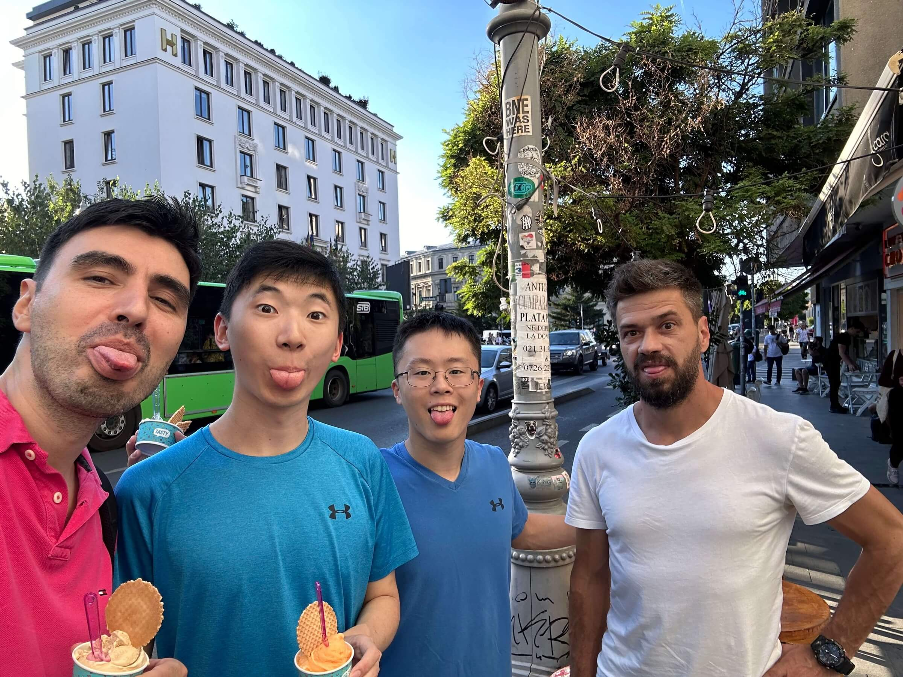

Hi, I'm Jonathan! If you're receiving this, chances are you already know me. You should save me some allocation in your round. But here's exactly why:
I'm a cloud GPU infrastructure geek with a passion for optimizing every FLOP. From Mexican gaming cafe route optimization to Singaporean packet loss mitigation; from virtualizing GPU VMs before NVIDIA official support to building physical clusters across the country, I've done it all. And empirically, it works. It's worked for both customers — who have scaled as much as 100x within 12 months on infrastructure my team has built for them at 1/10th the cost of AWS — as well as my team itself. Former teammates across the ventures I've worked in have exited with $XXm+ in aggregate secondary liquidity.
It doesn't matter what you're building. I want to work with you.
First, I want to be your friend. This matters above all else. We don't need to do an investment to be
friends.
But if you have room in your round, I am happy to be simple, green money. You
think about your business when you shower. I don't. I am happy to listen, vote with you, and follow you.
Whether to the moon or back to Earth, I'm in.
The more successful "jonathan portco's" seem to tend to call me for various advice. I try to be helpful
enough so that I'm in the first three calls a founder makesfor advice relating to my areas of expertise.
Here are a few things people tend to call me for, although I'm happy to help with anything:
in Decart, Runware, Etched, and others. I've helped a robotics portco build a physical GPU cluster; a generative media company grow by 400 GPUs over a weekend; and co-founders navigate messy splits.
If you don't feel comfortable losing money, I can invest through a scout fund too. Super chill.
So... let's do it?

This could be us! Ft. Flaviu from Runware. Free pro rata if you guess the country correctly! 😛